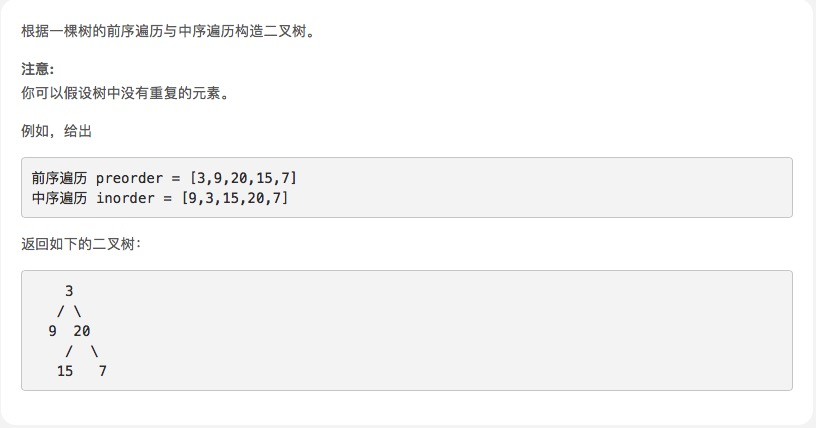

从前序与中序遍历序列构造二叉树

思路
中级的头有点疼了，题解
var buildTree = function (preorder, inorder) {
if (inorder.length === 0) return null
let root = new TreeNode(preorder[0])
let mid = inorder.indexOf(preorder[0])
root.left = buildTree(preorder.slice(1, mid + 1), inorder.slice(0, mid))
root.right = buildTree(preorder.slice(mid + 1), inorder.slice(mid + 1))
return root
};
- 字符串截取 slice 性能消耗比较大，没必要把 preorder 和 inorder 数组真的切割出来
- 用两个指针表示即可。写一个 helper 函数，接收2对指针
var buildTree = (preorder, inorder) => {
return helper(preorder, 0, preorder.length - 1, inorder, 0, inorder.length - 1)
}
function helper(preorder, p_start, p_end, inorder, i_start, i_end) {
if (p_start > p_end) return null // preorder为空
let rootVal = preorder[p_start] // 根节点的值
let root = new TreeNode(rootVal) // 根节点
let mid = inorder.indexOf(rootVal) // 根节点在inorder的位置
let leftNum = mid - i_start // 左子树的节点数
root.left = helper(preorder, p_start + 1, p_start + leftNum, inorder, i_start, mid - 1)
root.right = helper(preorder, p_start + leftNum + 1, p_end, inorder, mid + 1, i_end)
return root
}
- 每次递归都要在 inorder 数组中寻找根节点的位置，耗费性能
- 提前把 inorder 数组的项和索引存储在 HashMap 。查询哈希表比较节省性能
var buildTree = (preorder, inorder) => {
let map = new Map()
for (let i = 0; i < inorder.length; i++) {
map.set(inorder[i], i)
}
return helper(preorder, 0, preorder.length - 1, inorder, 0, inorder.length - 1, map)
}
function helper(preorder, p_start, p_end, inorder, i_start, i_end, map) {
if (p_start > p_end) return null // preorder为空
let rootVal = preorder[p_start] // 根节点的值
let root = new TreeNode(rootVal) // 根节点
let mid = map.get(rootVal) // 根节点在inorder的位置
let leftNum = mid - i_start // 左子树的节点数
root.left = helper(preorder, p_start + 1, p_start + leftNum, inorder, i_start, mid - 1, map)
root.right = helper(preorder, p_start + leftNum + 1, p_end, inorder, mid + 1, i_end, map)
return root
}
附加
另外一个巧妙的方法
- 变量 pre 保存当前要构造的树的 root
- 变量 in 保存 inorder 数组中可以成为 root 的数字们的开头那个
- 对于当前要构造的树，有一个停止点 stop ，inorder 数组中第 in 项到第 stop 项是要构造的树的节点值们
- 每次递归调用，都会确定出一个停止点，它告诉了子调用在哪里停止，把自己的根节点值作为左子树调用的停止点，自己的（父调用给下来的）停止点作为右子树的停止点
var buildTree = function(preorder, inorder) {
pre = i = 0
build = function(stop) {
if (inorder[i] != stop) {
var root = new TreeNode(preorder[pre++])
root.left = build(root.val)
i++
root.right = build(stop)
return root
}
return null
}
return build()
};